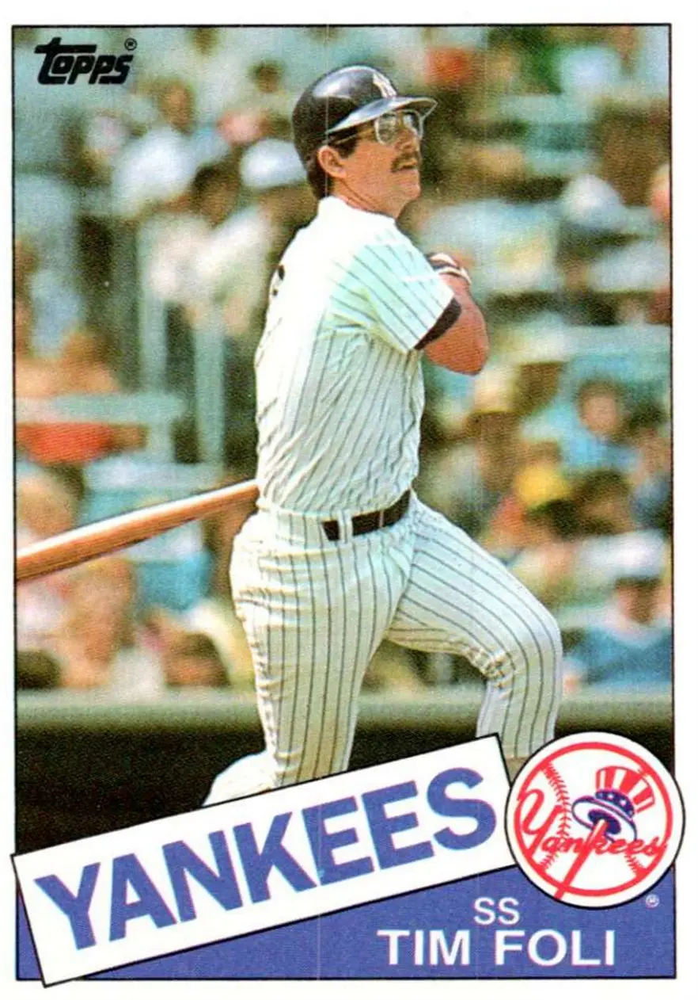

Tim Foli "Crazy Horse"
Career Highlights & Facts
(Facts are AI-generated and may require verification)
- Selected as the number 1 overall pick in the amateur draft.
- Recorded a natural cycle by hitting a single, double, triple, and home run in that specific order.
- Suffered a broken jaw during a collision at second base while attempting to turn a double play.
Would you like to find out more about Tim Foli?
Read Player Biography
Tim Foli
January 4, 2012
/
in
BioProject - Person
1979 Pittsburgh Pirates
/
by
admin
This article was written by
Norm King
Did you know that Crazy Horse had a World Series ring?
Wait a minute! How could the Oglala Sioux Indian chief who, along with Sitting Bull, routed General Custer at Little Bighorn, have a World Series ring? He never played baseball. True. But “Crazy Horse” was also the nickname given to Tim Foli, a talented but hot-tempered infielder who played 16 years in the majors for six teams, and won it all with the Pirates in 1979.
Timothy John Foli entered the world on December 6, 1950, in Culver City, California, one of four children (two sons and two daughters) born to Ernie and Lillian Kathleen (Deserf) Foli. When Ernie Sr. wasn’t toiling in the real-estate business, he worked with his sons as they moved up the Little League ranks. Both boys were athletes; Tim’s brother, Ernie Jr., was eight years older than Tim, and also played professional baseball. He got as high as the Triple-A level as an infielder in the Los Angeles Angels and Kansas City Athletics organizations.
Tim began playing in a park league at the age of 6 before moving on to the Canoga-Winnetka Little League from age 9 until he was 13. The competitive intensity and fire that marked his career was evident even then.
“Tim has played with intensity and competitiveness all his life and even when he was six years old in the park league he was always far advanced,” said his Little League coach, Quentin Quick. “He simply has tremendous desire and talent to go with it.”
1
That desire and talent turned Foli into a three-sport athlete at Notre Dame High School in Sherman Oaks, California. In his senior year, he was chosen Southern Section 3-A player of the year in baseball, when he hit an incredible .562. He was also an elite basketball and football player and was offered a scholarship to play quarterback at the University of Southern California under legendary coach John McKay. New York Mets scout Harry Minor had other ideas, however, and convinced the “Amazin’s” to select him number 1 overall in the 1968 amateur draft. A bonus ranging from $70,000 to $85,000, depending on the source, convinced Foli he should forgo college and devote himself to professional baseball.
2
His first stop was with the Marion (Virginia) Mets of the Rookie-level Appalachian League, where his intensity gained notice.
“There he batted .281 (with four home runs and 36 RBIs in 235 at-bats) and 9began to build the reputation, says
Ed Kranepool
of the Mets, ‘of a guy who’s so hyper that he brings his bat back to his hotel room,’” wrote Pat Jordan in
Sports Illustrated.
The Mets sent him to their Visalia club in the Class A California League for 1969. He had an impressive year, batting .303 with 15 home runs and 62 RBIs, and he made the all-star team, but after one tough game on a very hot day in which he went 0-for-5, he slept at second base.
“So I got a blanket and a record player and found the coolest place available,” Foli recalled. “I lay down along near shortstop and listened to music and thought about how I wouldn’t go nothing-for-five again.”
3
The problem Foli had playing in the Mets’ minor-league system, besides being too hard on himself, was that the parent club, just coming off its first world championship, already had two veteran major-league-caliber shortstops,
Bud Harrelson
and
Al Weis
. That didn’t stop Foli, however, from wowing them at the Mets’ 1970 spring-training camp.
“Foli, the 19-year-old shortstop from Culver City, California, is the talk of Florida,” wrote Jack Lang in
The Sporting News
.
“He draws raves everywhere he goes from players, managers, scouts and fans.”
4
As any thespian will tell you, rave reviews don’t guarantee a long run on Broadway. Such was the case with Foli, who for all the talent he displayed still only had 163 games of professional experience behind him. Mets management decided he would benefit from another year in the minors and sent him to the Tidewater (Virginia) Tides of the Triple-A International League. Foli, understandably, reacted like the 19-year-old that he was.
“They tell me I’m only 19 and I’ve played only 163 games in the minors,” he said, “but why should that make any difference if I can do the job? And I know I can do the job.”
5
Unfortunately, Foli couldn’t do the job offensively at Triple-A the way he did the previous season, with a lower batting average and diminished home-run and RBI totals (.261, 6, 30). The Mets nonetheless called him up during the September pennant race, and he made his major-league debut on September 11, 1970, as a ninth-inning defensive replacement for Harrelson. He didn’t get to bat in that game, which meant he managed to avoid facing future Hall of Famer
Bob Gibson
.
Foli made his first major-league start the next day against the Cardinals, but not at his customary position — he played third base instead. The Mets were in only their ninth year of existence that season, yet Foli was the 43rd man to play the hot corner for the franchise. (Rumor had it that number 44 was going to be the winner of a fan essay contest.) Foli went 2-for-4 with an RBI at the plate, and had two putouts and three assists in the field with no errors. That September he got into five games with four hits and an RBI.
Wayne Garrett
was expected to be the third baseman for the 1971 season, having played 70 games at the position the previous year. But just as spring training began, Uncle Sam came calling and Garrett was drafted into the Army, giving Foli an opening to make the team. Foli took full advantage of the chance, worked hard in Florida, and came north with the team as the backup to the more experienced
Bob Aspromonte
, who had been acquired from the Atlanta Braves in December 1970.
It was during the 1971 season that Foli’s teammates started calling him Crazy Horse because, in the politically incorrect spirit of the time, “he keeps wandering up and down the dugout like an Indian on the warpath waiting to get at the U.S. Cavalry.”
6
Of course, part of that intensity stemmed from his being only 20 years old. How else to explain a dugout incident with teammate Ed Kranepool during a May 26 game against the Phillies? As the Mets infield warmed up prior to the first inning, when first baseman Kranepool tossed a grounder to Foli at third, Foli’s return throw was wide, forcing Kranepool to stretch for the toss. Kranepool wasn’t pleased, and so threw grounders to every infielder except Foli for the rest of the warmup. A seething Foli charged Kranepool in the dugout when the half-inning was over, demanding to know why Kranepool stopped throwing to him. Yelling led to pushing which led to Kranepool giving Foli a smack in the snoot and it was all over.
“He was showing me up in front of my teammates,” said Kranepool. “I couldn’t let him do that.”
7
Temper tantrums aside, it seems that the Mets had trouble finding a spot for Foli that season, playing him at third, second, and short over 97 games; he even played five innings in center field. At the plate he hit only .226 with 24 RBIs in 288 at-bats, not the kind of numbers that warrant a lot of playing time.
They also don’t warrant a team tolerating somebody getting into scraps with teammates and coaches. As if fighting with Kranepool wasn’t enough, Foli also duked it out with Mets coach
Joe Pignatano
during spring training in 1972 over a mix-up about hockey tickets for an East Coast League playoff game. It seems that some ducats were left for Pignatano and he arrived at the arena to find Foli and others sitting in his seats. A slight confrontation ensued, but the players got up and moved. Foli, not one to let a sleeping pout lie, walked into the coaches’ dressing room the next morning to discuss the matter further. A couple of punches and a broken pair of glasses later, Foli was soon gone from the Mets. They shipped him off to Montreal along with first baseman
Mike Jorgensen
and outfielder
Ken Singleton
in return for right fielder
Rusty Staub
on April 5, 1972.
The trade was a boon to Foli’s career because he got the playing time at shortstop in Montreal that he would not have had in New York behind Harrelson. It also allowed him to play for
Gene Mauch
, who saw in Foli a younger version of himself, temper and all.
“Foli would light a fire under that team [the Expos], Mauch assumed,” wrote Jordan. “Mauch said he had taken to the young shortstop because ‘there’s no mystery to him’ and because he bore a strong resemblance to a fiery shortstop of another generation — Mauch himself.”
8
Foli replaced incumbent number-one shortstop
Bobby Wine
and hit reasonably well considering that he played in an era when not much offense was expected from the position (the top 15 shortstops in 1972 totaled 65 home runs; in 2013, the top 15 hit 184).
9
He hit .241 with his first two major-league home runs and 35 RBIs. Foli also led the league in fines resulting from run-ins with umpires (four), and turned being a batboy into a hazardous occupation by flinging bats, gloves, helmets, and other paraphernalia.
Foli’s 1973 season was marred by a horrific collision with
Bob Watson
of the Houston Astros on July 8 at Montreal’s
Jarry Park
. Watson, who was on first as a result of a Foli error, was heading to second on a groundball by
Doug Rader
while Foli was making the pivot for a double play. Watson put up his forearm just as Foli lurched forward to complete the throw, and the two crashed into each other, with Foli getting the worst of it. Foli and the baseball went flying while his glasses also sailed through the air from the force of the impact. To add insult to his injury, Foli was charged with his second error of the frame as he lay prone on the infield, bleeding from the mouth. He was carried off the field on a stretcher with a broken jaw, and missed exactly one month, returning on August 8. Three days after his return, he was suspended for three games for bumping umpire
Ken Burkhart
earlier in the season. Despite the injury and suspension, his numbers were similar to those of the previous season. In 82 fewer at-bats, he hit .240 with 2 home runs and 36 RBIs.
Foli had a routine season in 1974 in which he hit .254 with no home runs and 39 RBIs, and had a huge dust-up with the Dodgers’
Rick Auerbach
on July 7. Auerbach slid into Foli while trying to break up a double play, precipitating a fight between the two of them and a bench-clearing brawl. The Dodgers were furious with Foli. LA second baseman
Davey Lopes
called him a dirty player who can dish it out but can’t take it, while catcher
Joe Ferguson
referred to him as a cheap-shot artist.
10
Other teams may have hated Foli, but Ginette Pélissier, a former bunny at the Montreal Playboy Club, showed she loved him by marrying him in December 1974. As of 2015, they were still married, with five children.
The bunny’s husband played shortstop like Hall of Famer
Rabbit Maranville
in 1975, leading all National League shortstops in putouts (260), assists (497), and double plays turned (104). His offensive numbers remained meager (.238, 1, 29), but his pugnaciousness was in fine form. He got into a fight with the Cardinals’
Reggie Smith
on July 5 when he accused Smith of coming into second base too hard while trying to break up a double play, and earned a three-game suspension in September for arguing with the umpires after a game in which he had been thrown out for … arguing with the umpires.
Whether it was helpful or not, Foli’s fiery playing style was one of the few bright spots on a truly dreadful 1976 Expos team that went 55-107. So was
the unusual way in which he hit for the cycle
, the first in the team’s history, and a natural one to boot. An April 21 game against the Cubs at
Wrigley Field
was suspended by darkness after six innings, by which time Foli had singled, doubled, and tripled in that order. His home run came in the eighth inning when play resumed the following day. He went 4-for-5 with three RBIs as the Expos won, 12-6.
11
Foli’s overall numbers were improved. His six home runs were a career high, and he hit .264 and had 54 RBIs, the most in his career to that point.
Even though he had good numbers in 1976, Foli’s days in Montreal were numbered by 1977. Giants shortstop
Chris Speier
wanted out of San Francisco because he never knew week-to-week where or if he was going to play. He wanted to come to Montreal because he loved the city and saw the team as an up-and-coming contender. Expos GM
Charlie Fox
, Speier’s first manager with the Giants, was glad to oblige, not just because he knew Speier, but saw him as a winner. Fox sent Foli to San Francisco on April 27, 1977, in an even-up deal for Speier.
“I think they are both good shortstops,” said Fox. “But if you put them both in a room and told me I could have either one, I would take Speier because I think he can make us a winner sooner.”
12
Things got off to a rocky start for Foli in the Bay area. In his first game with the Giants he made an error on a groundball by
José Cruz
of the Houston Astros. The next batter was Bob Watson, who had broken Foli’s jaw four years earlier. Watson didn’t break any body parts this time, but did smack a home run that gave Houston a 2-0 lead on its way to a 3-1 win. That start was a sign of things to come for Foli, as he hit .221 for the year, the lowest batting average of his career to that point, with 4 home runs and 27 RBIs.
If reality television shows existed back then, Foli could have starred in one called “What Goes Around Comes Around.” In December the Giants sold Foli back to the Mets, for whom he replaced Bud Harrelson as the team’s starting shortstop. (These were not the Mets that Foli signed with in 1970. That team was coming off a World Series win, but the woeful 1977 edition lost 96 games.) Foli rebounded offensively in 1978, hitting .257, again with 27 RBIs but only one home run. That wasn’t good enough for the Mets, who opted for more speed from the shortstop position, and traded Foli and minor-league pitcher Greg Field to Pittsburgh for their shortstop,
Frank Taveras
, on April 19, 1979. Taveras had led both leagues with 70 stolen bases in 1977, and followed that up with 46 thefts in 1978. Foli, meanwhile, would end up with 81 steals for his entire career. He also had, by joining the Pirates, a FAM-A-LEE!
The 1979 Pirates were a close-knit group that danced all the way to the World Series to the tune of their theme song, the Sister Sledge hit “We Are Family.” Led by their captain, veteran slugger
Willie Stargell
, and right fielder
Dave Parker
, the Pirates led the league in runs scored (775). Foli caught the team’s hitting bug by putting up the best offensive numbers of his career — he had a .288 batting average with 65 RBIs, and scored 70 times. He also did well in the postseason, batting .333 in both the three-game sweep of the Cincinnati Reds during the best-of-five NLCS and the World Series triumph in seven games over the Baltimore Orioles, going the entire postseason without striking out. Being with the Pirates seemed to steady Foli. He made a good keystone combination with second baseman
Phil Garner
, and he didn’t fly off the handle as often.
“Tim is still quick to jaw with a teammate and therefore is not the most popular Pirate, but he’s come a long way in keeping his Irish temper under control,” wrote Mailand McIlroy in a Pittsburgh-area newspaper. “Because he has a lot to say, some of the other players call him “coach” in a rather irreverent tone.”
13
Being in a good space won’t prevent injuries or work stoppages. Various ailments, including a leg infection resulting from being spiked early in the season, limited Foli to 127 games in 1980, while a players’ strike restricted him to 86 games in 1981. His numbers for the two seasons returned to his normal levels after peaking in 1979 (.258 batting average, 3 home runs, 58 RBIs for the two seasons combined).
Even the best families have their breakups, and such was the case with Foli and the Pirates, who traded him to the California Angels for catcher/outfielder
Brian Harper
on December 11, 1981. In what would have been a sequel had the show “What Goes Around Comes Around” existed, Foli was reunited with his manager from the Montreal days, Gene Mauch. Unlike the Montreal situation, Mauch was in charge of a playoff-caliber team in 1982 that won the American League West Division before losing to the Milwaukee Brewers in the then-maximum of five games in the ALCS. Foli was a major contributor to the team’s success, leading AL shortstops in fielding percentage (.985) and finishing sixth in assists. He led both leagues in sacrifice hits (26). He also set a league record with only 14 walks in 528 plate appearances. He had only 2 hits in 16 at-bats in the playoffs.
The last three years of Foli’s major-league career saw vastly diminished playing time. In 1983 a bruised rotator cuff kept him out of the lineup from early August through the rest of the season. He couldn’t avoid trouble while injured; in September, he was suspended, then reinstated and fined for changing from his uniform into street clothes during a rain delay in Chicago. The Angels traded Foli to the New York Yankees after the season for pitcher
Curt Kaufman
. He played in only 61 games with the Yankees in 1984 and demanded a trade after the season because he wasn’t getting any playing time, not because of his relationship with
George Steinbrenner
. In fact, he liked “The Boss.”
“[A] lot of people didn’t like George,” Foli said. “I liked George. He’ll do whatever it takes to win and I like that.”
14
The Yankees traded Foli back to Pittsburgh along with outfielder
Steve Kemp
and cash for infielder
Dale Berra
, outfielder
Jay Buhner
, and pitcher
Alfonso Pulido
before the 1985 season. Foli played in only 19 games for the Pirates that year before they released him on June 17. He then played one game for the Miami Marlins of the Class A Florida State League before calling it a career. In his last three major-league seasons, Foli played in 168 games and batted .247 with 2 home runs and 47 RBIs.
After his playing days, Foli stayed in baseball as a coach and manager. He coached with the minor-league Marlins in 1986, then spent two seasons coaching third base with the Texas Rangers. In the winter of 1987, he managed the Criollos de Caguas of the Puerto Rican League in the Caribbean Series, but was fired after the team lost two of its first three games (including one in which they committed eight errors). His replacement,
Ramon Aviles
, led Caguas to the title.
Foli also coached with the Brewers, Reds, Royals, Mets, and Washington Nationals. He has managed at the Triple-A level for the Nationals, where he skippered his son Daniel, a career minor-league pitcher, for one game in 2006. By 2010 Foli was the Nationals’ head of player development and special adviser to general manager Mike Rizzo.
It also turned out that you can take the Foli out of the fight, but you can’t take the fight out of the Foli, even after his playing days. On August 24, 1993, while coaching at first base with Milwaukee, Foli was ejected during the second game of a doubleheader for fighting with the opposing third-base coach,
Tommie Reynolds
, during a lengthy bench-clearing brawl between the Oakland Athletics and the Brewers. While with the Reds in 2001, he got into a fight with fellow coach
Ron Oester
after a game and required stitches for a cut to the head.
As of 2015, Foli lived in Ormond Beach, Florida, with Ginette. He became a born-again Christian while with the Pirates and has devoted time to speaking to Christian groups.
Sources other than those cited in notes:
biography.com/.
baseball-reference.com.
Los Angeles Times.
New York Times.
sportscelebs.com/.
Reds.enquirer.com.
Notes
1
Frank Mazzeo, Column,
Valley News
(Van Nuys, California), June 4, 1971.
2
A
Montreal Gazette
article from September 26, 1972, lists the bonus at $70,000,
Sports Illustrated
(June 9, 1975) lists it at $75,000, and the
Valley News
(June 4, 1971) said that the bonus was $85,000, plus $10,000 for college tuition.
3
Ian MacDonald, “Foli’s temper improves along with his hitting, fielding,”
Montreal Gazette
, September 26, 1972.
4
Jack Lang, “Foli Most Marvelous of New Mets,”
The Sporting News
, April 4, 1970.
5
Lang, “Mets to Place More Emphasis on Offense to Repeat Title Bid,”
The Sporting News,
April 11, 1970.
6
Lang, “Foli Making Mets’ Mark as King of the Rednecks,”
The Sporting News,
June 19, 1971.
7
Pat Jordan,
Sports Illustrated,
June 9, 1975.
8
Ibid.
9
The author was 15 years old and working on a cable television baseball show in the summer of 1972. He interviewed Bobby Wine at Jarry Park on July 9. Wine was cut from the team the next day.
10
Associated Press, “Dodgers fuming at Expos,”
Bakersfield Californian
, July 8, 1974.
11
It was the only time all season that the Expos scored in double figures.
12
Ian MacDonald, “Speier ‘Elated’ Over Deal That Turns Him Into Expo,”
The Sporting News
, May 14, 1977.
13
Mailand McIlroy, “Foli Has Become Glue For Pirates Infield,”
Daily News
(Huntington, Mount Union, and Sexton, Pennsylvania), March 19, 1980.
14
Tim McDonald, “Tim Foli is now Mr. Calm,”
St. Petersburg
(Florida)
Evening Independent,
April 2, 1985.
Full Name
Timothy John Foli
Born
December 6, 1950 at Culver City, CA (USA)
Stats
Baseball Reference
Retrosheet
Tags
1979 Pittsburgh Pirates
Career Totals
| WAR | AB | H | HR | BA | R | RBI | SB | OBP | SLG | OPS | OPS+ |
|---|---|---|---|---|---|---|---|---|---|---|---|
| 5.7 | 6047 | 1515 | 25 | .251 | 576 | 501 | 81 | .283 | .309 | .593 | 64 |
Statistics via Baseball-Reference.com
The Original Clue